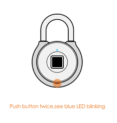
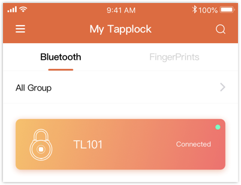
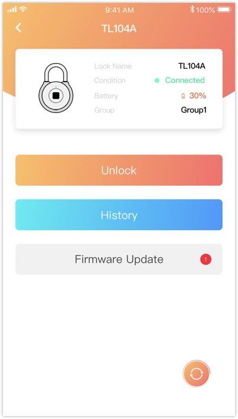
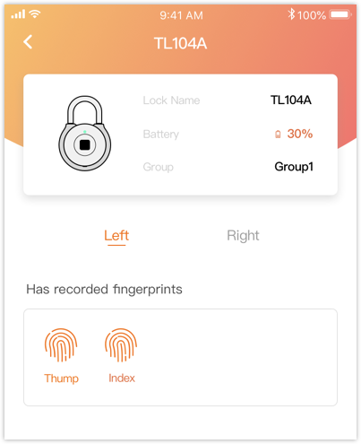
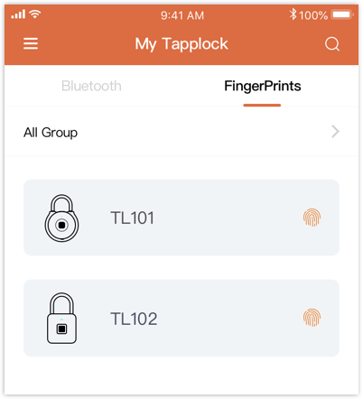
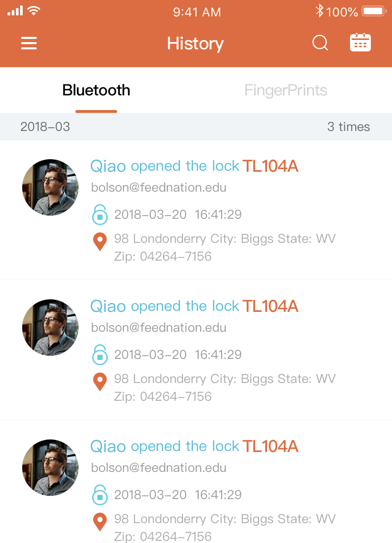

How to unlock with Bluetooth
1.1 Turn on the Bluetooth
1.2 Press button twice, see blue LED blinking

1.3 Press button twice, see the LED blinking.
1.4 When the lock connected, the light on the top right will turn to green.

1.5 Get into the lock detail page, you will see the unlock button.

1.6 Click to unlock the lock with Bluetooth.
How to unlock with Fingerprint
2.1 Get into lock detail page to see which fingerprint can be used to open the lock

2.2 Put your finger on the sensor for a while until the LED light turns to green.
2.3 Done!
How to view all locks
3.1 If you have view all locks permission, click “View all locks” on the sliding menu to see the lock list.

3.2 Click All Group to filter the lock list.
How to view all history
4.1 If you have VIEW ALL HISTORY permission, click “View all history” on the sliding menu to see all Bluetooth and Fingerprint access history.

How to update firmware
5.1 If you have INITIATE FIRMWARE UPDATE permission, you can see Firmware Update button on the lock detail page.
5.2 Click Firmware Update to start update firmware.